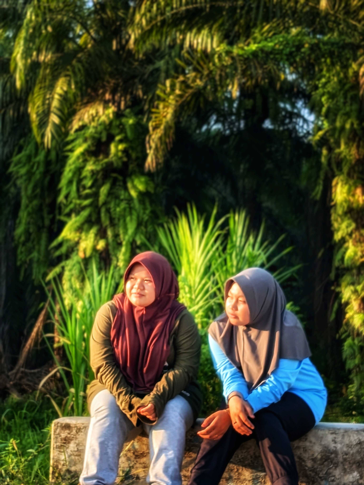

Kak Yani Tersayang 💕
My Best Sister, My Best Friend
Kak Yani Sudah Mewarnai Dunia Selama:
--
Tahun
--
Bulan
--
Hari
--
Jam
Ada Surat Khusus Dari Adikmu 💌
Ketuk lambang segel lilin merah di bawah untuk membuka
Surat Dari Sherly 🌸
"Hai Kak Yani tercinta... Sherly cuma mau bilang kalau Sherly bangga banget punya kakak kayak Kak Yani. Makasih ya Kak selalu sabar..."
❤️